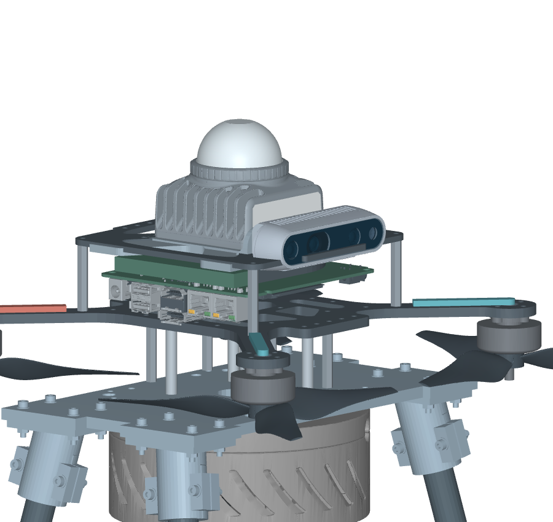

从已保存的实际状态重放；用于检查原图选帧与穿门机制。新物理实验会单独显示。

14 秒悬停与弯臂检查：0° → 90° → 118° → 0° 指令。画面来自积分状态，未用目标姿态回放；采用内部控制器及真值反馈。
下载本轮视频 · 模型评审后，再接入完整规划、PX4与感知链路。
SUPER、相机与SDK模型核查 PDF（2页） 论文模型核查附录（第13–15页） 后续实现路径与开发计划 TXT
阶段全文 PDF 两张图所在页 PDF